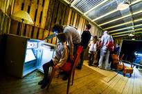
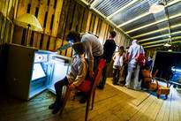

Hello, I'm Xavier

Hello, I'm Xavier
Developer and tinkerer, I'm commited to the values of the free software culture, knowledge sharing and DIY spirit.
The soldering iron, the keyboard and the glue gun are my favorite tools!
I design and realize embedded systems for interactive installations.
I also develop and provide guidance in the field of web development (Node.js, AngularJS, Industrialization of modern JavaScript, etc.)
I make stuff


I write about stuff
Hire me!
Dashboard @ Chromatic
With Sid Lee, we decided to transform the http://dashboard.sidlee.com website into an artistic installation that would make people think about how they consume data and how this data often ends into a forgotten world. To emphasize the vacuity of collecting every data of everything, we plugged 10 thermal printers (often found at the checkout in stores) to the stream of data the sensors generated within Sid Lee Paris agency. The printers would print every event that occured in the agency in real time. The bills that such printers produce always end up into a trash, so do most of the data we collect.
I was in charge of producing the creation, and I had to develop a specific software library to be able to turn these printers into IOT ready printers. The code of this library and the one of the installation are open source and can be found here:
This project was presented during the "Festival Chromatic" in Paris at "La cité de la mode et du design"
It's worth mentionning this intersting analysis (in french) of the installation: Festival Chromatic : focale sur les "données perdues" de l’agence Sid Lee
{kind=link}
{kind=link}
{kind=link}
{kind=link}
Dashboard @ Sid Lee
In celebration of its sixth anniversary, Sid Lee agency has tapped into the Internet of Things to track our infinitely quantifiable world using real-time data. To do so, the team had placed Arduinos and sensors throughout its Paris office to count everything that goes on, ranging from how many cups of coffee are poured in a day, to how many times the toilets flush, to how many times doors are opened, to how many steps are taken on the stairs, to how many liters of water are drunk, among countless other things.
I was in charge of hacking the furnitures to place various sensors, programming Arduinos and the Node.js server, deploying and scaling the application and some frontend programming.
You can visit the webiste here: http://dashboard.sidlee.com
The whole site (frontend, backend and arduino code) is open source and available here: https://github.com/SidLeeParis/sidLeeAgenceConnectee
This project won various prizes and was mentionned in a lot of online press:
- Winner of the "FWA Site of the Day" prize.
- Winner of the "Grand Prix Stratégies de la Publicité 2015, catégorie Autopromotion" prize.
- Shortlisted for the "Design award at Cannes Lions 2015"
- Various articles on the online press (Fast Company Design, Hype Beast, Atmel, etc.)
{kind=link}
{kind=link}
Folie
"Folie" is an hybrid piece, mixing circus, theatre, rave music and technolgy. A fantastic tale questionning the need of rituals, the modifications of the consciousness and how to master chaos. It has been shown in Nantes in november 2014. See Substance Cirk for more informations.
I was in charge of creating 4 custom red LED displays, where the subtitles of the show would be shown. I leveraged PLC communications, Arduino, Node.js and Wiimotes to remotely control them.
{kind=link}
{kind=link}
{kind=link}
Dans l'oeil du cyclope
"Dans l'oeil du cyclope" is an interactive installation I made with for the magazine Professeur cyclope. It's a set of 9 interactive installations, with stuffed animal, voodoo doll, bike and so on. It lets the user interact with these objects to read comics. It has been shown at La Ferme du Buisson the national scene of Marne-La-Vallée and Stereolux in Nantes.
I designed and realised the technical part of it, leveraging sensors, Arduino, and programming
 

{kind=link}
{kind=link}
{kind=link}
{kind=link}

De bouche à oreille
"De bouche à oreille" is an interactive installation I made with the collective Mille Plateaux, about the food in tales. It takes place in the manor of Kernault, in Brittany. Each visitor starts the visit with a bag filled with some wood objects representing food. They'll insert them on one of the 9 interactive installations to trigger sounds, videos and lights.
I designed and realised the technical part of it, leveraging sensors, Arduino, Raspberry Pi and MP3 players.

{kind=link}
{kind=link}
Mobiles Illégitimes
"Mobiles Illégitimes" is an interactive documentary, by Etrange Miroir, about the conditions of women in migration. Behind each door of the four furnitures, you'll hear a testimony or an analysis by migrants and activists involved in the migration and feminism questions.
I designed and realised the technical part of it, leveraging sensors, wireless communication (XBee), and MIDI messaging. Each furniture relies on a Raspberry Pi triggering messages when a door is opened and sending it wirelessely to a main media center.
Source code is available here: https://github.com/etrange-miroir/mobiles-illegitimes
{kind=link}
{kind=link}
{kind=link}
Coup de foudre
Tesla coils are fun! I had the chance to work with the Coup de foudre company to provide a MIDI interface for their Tesla coil. During a one week residency at Stereolux we managed to control the Tesla coil with MIDI from Ableton Live.
We also started to work on creating an Android app to control the Tesla coil. We chose to use Cordova so we had to develop our custom Cordova plugin to communicate from Android to Arduino, it's a work in progress and open source, so anyone can contribute!
Source code of the plugin is available here: https://github.com/xseignard/cordovarduino
{kind=link}

Leaplamp
The idea behind this work was to explore how to interface Arduino with Leapmotion, and to see what would be the precision we could get with some basic servos.
Since there is no lib to directly connect the Leapmotion to the Arduino, I used node.js to connect to the websocket server that streams the Leapmotion data and the johnny-five node.js lib to control the Arduino and the servos.
This work has been featured on Hack a Day and Adafruit blog.
More info here: Interfacing Leap Motion with Arduino thanks to Node.js


Taxiphone
"L'étrange taxiphone" is an interactive documentary, made with the collective Etrange Miroir, that questions the vision we have about immigrants. Relying on a scenography that represents a phone booth, the spectator compose a phone number and hears testimonials of migrants, speaking about how they are perceived by the society.
The rotary phones are Arduino controlled, and each composed phone number will be translated as a MIDI message and sent to Ableton Live to control the current played sound.
Source code is available here: https://github.com/etrange-miroir/etrange-taxiphone


{kind=link}

Minitel 2.0
This project is about reusing a Minitel as the peripherals of a Raspberry Pi. It means adapting video signals and circuit bending to reuse the Minitel's keyboard.
More info here: Plug your Minitel on your Raspberry Pi

{kind=link}